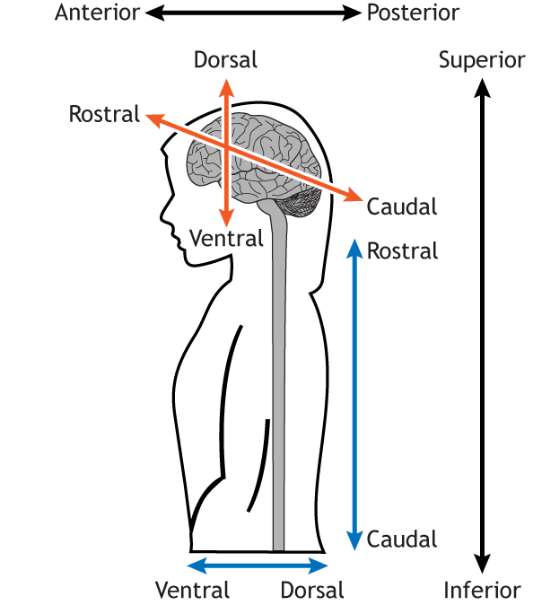

%%{init: {'flowchart': {'rankSpacing': 90, 'nodeSpacing': 60}}}%%
flowchart TD
NS["Nervous<br/>System"]
CNS["Central<br/>Nervous<br/>System"]
PNS["Peripheral<br/>Nervous<br/>System"]
Somatic["Somatic<br/>Nervous<br/>System"]
Autonomic["Autonomic<br/>Nervous<br/>System"]
Sympathetic["Sympathetic"]
Parasympathetic["Parasympathetic"]
Enteric["Enteric"]
NS --> CNS
NS --> PNS
PNS --> Somatic
PNS --> Autonomic
Autonomic --> Sympathetic
Autonomic --> Parasympathetic
Autonomic --> Enteric
%% Node styles
classDef root fill:#67bdfb,color:#000,stroke:#0a3554,stroke-width:4px,font-size:20px
classDef central fill:#9ad1ff,color:#000,stroke:#1f5fa0,stroke-width:3.5px,font-size:18px
classDef peripheral fill:#ffd27d,color:#000,stroke:#b8891c,stroke-width:3.5px,font-size:18px
classDef autonomic fill:#ffb3b3,color:#000,stroke:#b84a4a,stroke-width:3px,font-size:17px
class NS root
class CNS central
class PNS peripheral
class Somatic peripheral
class Autonomic autonomic
class Sympathetic autonomic
class Parasympathetic autonomic
class Enteric autonomic
%% Rounded boxes
style NS rx:22,ry:22
style CNS rx:18,ry:18
style PNS rx:18,ry:18
style Somatic rx:16,ry:16
style Autonomic rx:16,ry:16
style Sympathetic rx:14,ry:14
style Parasympathetic rx:14,ry:14
style Enteric rx:14,ry:14
%% Arrows: hierarchy encoded in weight and style
linkStyle 0 stroke:#0a3554,stroke-width:5px
linkStyle 1 stroke:#0a3554,stroke-width:5px
linkStyle 2 stroke:#b8891c,stroke-width:5px
linkStyle 3 stroke:#b84a4a,stroke-width:5px
linkStyle 4 stroke:#b84a4a,stroke-width:5px
linkStyle 5 stroke:#b84a4a,stroke-width:5px
linkStyle 6 stroke:#b84a4a,stroke-width:5px
Neuroscience of social-cognitive enhancement for well-being and Neural bases of decision processes
Module 1 - Organization of the Nervous System
Anatomical Directions
RostralorAnterior: toward the front
CaudalorPosterior: toward the back
Dorsal: toward the top
Ventral: toward the bottom
Medial: toward the midline
Lateral: away from the midline
 
Anatomical Planes
The Body can be sectioned along three main planes:
Sagittal: Divides left and right halvesCoronal: Divides rostral and caudal partsHorizontal (or Axial or Transverse): Divides dorsal and ventral parts


Peripheral Nervous System (PNS)
The PNS includes:
- Cranial & Spinal nerves
- Autonomic NS
- Somatic NS
Its main role is
communicationbetween the body and the CNS.
Information flows in two directions:
Afferent: From body to CNSEfferent: From CNS to body


Somatic nervous system
The somatic nervous system:
Efferent Signals
- Skeletal muscles
- Voluntary movement
Afferent Signals
- Skin
- Muscles and Joints
This includes the sense of touch, temperature, pain, and proprioception.
Activity in this system is usually under
consciousperception andvoluntarycontrol.

Autonomic nervous system
The autonomic nervous system regulates internal physiology.
It controls:
- Vital functions (Heart rate, breathing…)
- Smooth muscle (Digestion, salivation…)
- Glands (Hormones…)
Most autonomic activity occurs
withoutconscious awareness. It is composed of two main branches:SympatheticandParasympathetic.

Sympathetic nervous system
The sympathetic nervous system prepares the body for action Fight or Flight Response.
Activation of the sympathetic system typically leads to:
- Increased heart rate
- Bronchodilation
- Reduced digestive activity
- Mobilization of glucose
Increase the
Arousallevel. These effects support physical and cognitive demands.
Parasympathetic nervous system
The parasympathetic nervous system promotes maintenance and recovery. Rest and Digest Response.
Activation of the parasympathetic system typically leads to:
- Decreased heart rate
- Increased digestive activity
- Energy storage
- Glandular secretion
Decrease the
Arousallevel. These effects support recovery and homeostasis.
Frontal lobe
The frontal lobe is located anterior to the central sulcus.
It is heavily involved in motor control and high-level cognition.
Primary roles
- Voluntary movement
- Planning and decision making
- Executive control
Effects of damage
- Motor dysfunctions
- Changes in personality and social behavior

Parietal lobe
The parietal lobe lies posterior to the central sulcus. It integrates sensory information to construct spatial and bodily representations.
Primary roles
- Somatosensory processing
- Spatial awareness (Propioception)
- Integration of sensory modalities
Effects of damage
- Impaired touch perception
- Spatial Neglect, especially after right hemisphere damage

Basal nuclei
The basal nuclei are a group of interconnected nuclei. Including the dorsal striatum (caudate nucleus and putamen) and the ventral striatum (nucleus accumbens), the globus pallidus, the ventral pallidum, the substantia nigra, and the subthalamic nucleus.
They are best known for their role in:
- Movement regulation
- Action selection
- Habit formation
Damage to these structures disrupts
movementwithout causing paralysis.

Hippocampus
The hippocampus is located in the medial temporal lobe.
It is essential for:
- Formation memory and Contextual processing
- Spatial navigation
- Emotional regulation
Damage may impair the ability to form new long-term
memories.

Amygdala
The amygdala is also located in the medial temporal lobe.
It plays a major role in:
- Emotional processing
- Threat detection
- Assigning emotional value to stimuli
Damage to this structure may strongly influence learning and memory under
emotionalconditions.
Brainstem
The brainstem connects the brain to the spinal cord.
It is essential for survival.
It controls basic functions such as:
- Breathing
- Heart rate
- Sleep and arousal

Brainstem subdivisions
The brainstem is divided into three major parts:
- Midbrain
- Pons
- Medulla
Each contains nuclei and pathways critical for life.
Cranial nerves
| Sensory | Motor | Mixed |
|---|---|---|
| Olfactory I | Oculomotor III | Trigeminal V |
| Optic II | Trochlear IV | Facial VII |
| Vestibulocochlear VII | Abducens VI | Glossopharyngeal IX |
| Accessory XI | Vagus X | |
| Hypoglossal XII |
The Vagus nerve X is unique. It provides extensive parasympathetic innervation to thoracic and abdominal organs. It is a major pathway for autonomic communication between brain and body.